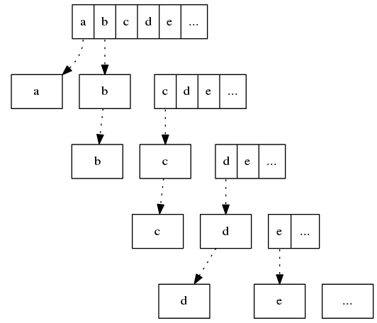

P102: Find the last but one element of a list
求列表中倒数第二个元素。该问题用单元测试无岐义描述为：
from python99.lists.p102 import find_last_but_one, find_last_but_one_recursive
def test_p102_find_last_but_one():
input = ['a', 2, 3, 'Z', 9]
actual = find_last_but_one(input)
assert actual == 'Z'
list 是有序序列，其中每个元素都可以通过位置索引直接访问。倒数第二的位置索引可以通过縂长度减二得到。
## find the last but one element of a list
def find_last_but_one(list):
if len(list) < 2:
return None
return list[len(list)-2]
但如果不使用len该怎么解呢？
列表可以被拆为第一个元素和剩余列表两部份，也可以被拆为三部份：第一个元素、第二个元素和剩余列表，祇要列表长度至少有二。

当剩余列表为空时，拆出来的第一个元素即为原列表的倒数第二个元素。
def find_last_but_one_recursive(l):
first = l[0]
second = l[1]
remain = l[2:]
if remain == []:
return first
return find_last_but_one_recursive([second]+remain)
单元测试：
def test_p102_find_last_but_one_recursive():
input = ['a', 2, 3, 'Z', 9]
actual = find_last_but_one_recursive(input)
assert actual == 'Z'